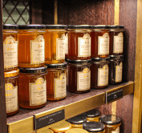

Hace décadas, en los tranquilos campos del interior de la provincia de Buenos Aires, nació Pikki, una pequeña empresa que lleva la esencia de la naturaleza directamente a tus sentidos. Fundada por Raymundo Novoa y su hija Mirta Novoa, dos apasionados apicultores, Pikki se convirtió en el resultado de una búsqueda incansable por compartir el regalo de la miel pura y de alta calidad con el mundo.
Todo comenzó con una colmena y una visión. Mirta y Raymundo se unieron para crear un lugar donde la apicultura no solo fuera una actividad, sino una forma de vida. Inspirados por el mágico baile de las abejas entre las flores y el increíble proceso de transformación de néctar en oro líquido, se comprometieron a establecer prácticas sostenibles y respetuosas con la naturaleza.
A lo largo de los años, Pikki ha crecido, pero su compromiso con la calidad y autenticidad sigue siendo el mismo. Cada tarro de miel es el resultado de una dedicación inquebrantable a la artesanía apícola y a la preservación de la biodiversidad local. Desde la dulce miel de acacia que captura la delicadeza de la primavera hasta la profunda miel de bosque que evoca los secretos del entorno natural, Pikki se esfuerza por brindar experiencias únicas a través de sus productos.
Hoy en día, el apasionado equipo liderado por Raúl, honra la memoria y el legado de los fundadores, Mirta y Raymundo, quienes en su compromiso incansable con la naturaleza y la apicultura dejaron una huella imborrable. Cada tarro de miel que lleva la etiqueta de Pikki es un tributo a la visión y el amor que ellos depositaron en cada colmena.
Recolección
Nuestra aventura comienza en el hermoso paisaje donde nuestras colmenas prosperan. Durante la etapa de recolección, nuestros apicultores expertos trabajan en estrecha armonía con las abejas, recolectando el néctar de las flores más exquisitas. Este proceso es fundamental para asegurar la pureza y calidad de nuestra miel. Cada gota de néctar es recogida con cuidado y respeto por la naturaleza.
Extracción
Una vez que las abejas han hecho su trabajo y transformado el néctar en deliciosa miel, llega el momento de la extracción. En nuestras instalaciones, el equipo de producción utiliza métodos suaves y no invasivos para separar la miel de los panales. Esto garantiza que conservemos todas las propiedades naturales y beneficiosas de la miel.
Filtración

La pureza es esencial para nosotros. Después de la extracción, la miel pasa por un proceso de filtración cuidadoso para eliminar cualquier impureza o partícula no deseada. Esto asegura que cada tarro de miel que llega a tu hogar esté limpio y claro, listo para disfrutar.
Envasado

La miel recién extraída es envasada con cariño en nuestros tarros distintivos. Cada etiqueta lleva consigo la historia de nuestra empresa y el esfuerzo dedicado a cada lote de miel que producimos. Nuestros tarros son un tributo a la calidad y la dedicación que ponemos en cada paso del proceso de producción.
Distribución
Finalmente, nuestras mieles, ricas en sabor y nutrientes, están listas para llegar a tu mesa. Trabajamos con distribuidores de confianza y tiendas locales para asegurarnos de que puedas disfrutar de la miel más fresca y deliciosa en cada bocado. Cada tarro es un testimonio de nuestro compromiso con la excelencia en la producción de miel.